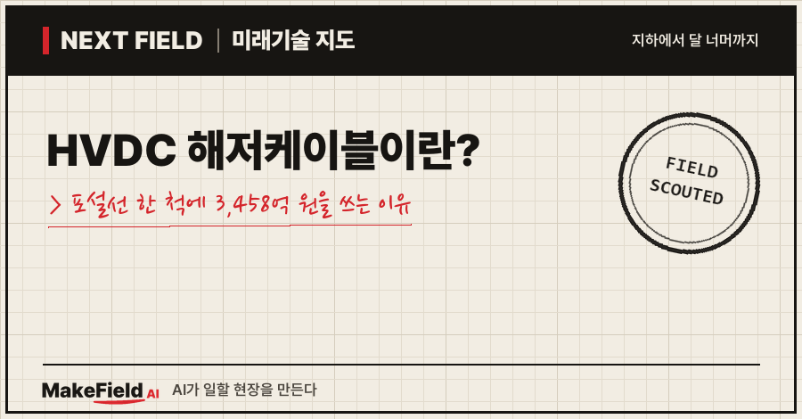
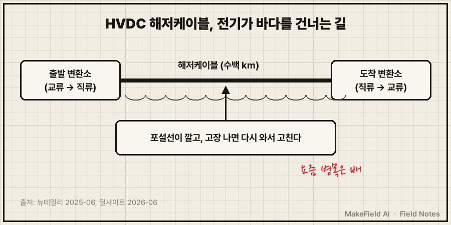
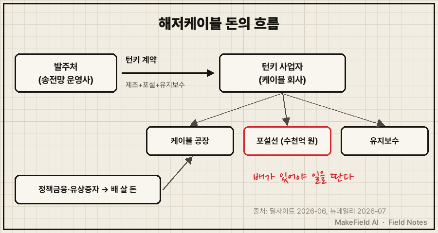
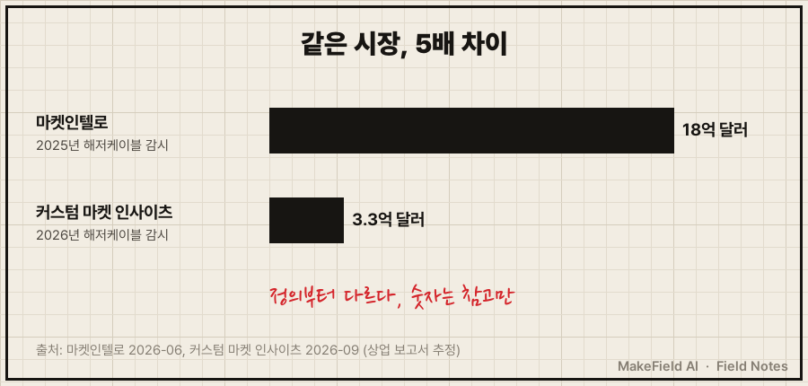

바다 밑으로 수백 km짜리 전기 고속도로를 까는 사업에서, 요즘 가장 비싼 줄은 케이블이 아니라 '배'예요. 케이블을 잘 만드는 것만으로는 일을 따기 어렵고, 직접 바다에 깔고 고칠 수 있는 회사가 유리해졌기 때문입니다.
한 줄 요약: 서해안 HVDC 해저케이블 사업은 신해남–태안–서인천 403km, 새만금–태안–영흥 190km 구간으로 총사업비가 11조 원에 이르고(뉴데일리 2025-06), 발주처가 제조·시공·유지보수를 한 번에 맡기는 턴키 방식을 선호하면서 케이블 회사들이 수천억 원짜리 포설선을 사들이고 있다(딜사이트 2026-06).
이 글은 2026년 11월 기준 공개 자료로 HVDC 해저케이블이 무엇인지, 왜 지금 수요가 몰리는지, 돈은 누가 내고 누가 받는지, 그리고 이 사업의 약점은 무엇인지 차례로 풀어 봅니다.
1. HVDC 해저케이블이란 무엇인가요
HVDC 해저케이블이란 아주 높은 전압의 직류 전기를 바다 밑으로 먼 거리까지 보내는 전력 케이블이다. 발전소가 몰린 지역의 전기를 바닷길로 돌아 수요가 큰 도시까지 실어 나르는 '물밑 송전선'이에요.
💡 HVDC(초고압 직류 송전) — 집 콘센트처럼 방향이 계속 바뀌는 교류 대신, 한 방향으로만 흐르는 직류를 아주 높은 전압으로 보내는 방식. 먼 거리일수록 새는 전기가 적어 장거리·해저 송전에 쓴다.
구조는 세 덩어리로 나뉘어요. ① 출발지 육지에서 교류를 직류로 바꾸는 변환소, ② 바다 밑을 지나는 해저케이블, ③ 도착지에서 다시 교류로 바꾸는 변환소입니다. 이 글은 이 중 가운데, 바다 밑 케이블과 그것을 까는 일에 집중해요.

그림을 글로 옮기면, 전기는 '변환소 → 해저케이블 → 변환소' 순서로 바다를 건너요. 케이블을 만드는 공장, 그 케이블을 바다에 까는 포설선, 깔린 뒤 고장을 고치는 유지보수가 모두 한 사업 안에 들어 있습니다.
2. 왜 지금 해저케이블 수요가 몰리나요
발전소(특히 재생에너지)가 몰린 지역과 전기를 많이 쓰는 수도권이 멀리 떨어져 있고, 육지에 새 송전탑을 세우기가 어렵기 때문이다. 바닷길은 그 우회로예요.
국내 대표 사례가 '서해안 에너지고속도로'입니다. 호남 쪽 전기를 서해 바다 밑으로 수도권까지 끌어오는 계획이에요.
| 구분 | 내용 | 출처 |
|---|---|---|
| 구간 | 신해남–태안–서인천 403km, 새만금–태안–영흥 190km | 뉴데일리 2025-06 |
| 총사업비 | 약 11조 원 | 뉴데일리 2025-06 |
| 목표 | 2030년까지 건설(대통령 공약 목표로 소개) | 뉴데일리 2025-06 |
| 해저케이블 본입찰 | 당초 2026년 상반기 → 2027년 상반기로 넘어간 것으로 파악 | 딜사이트 2026-08 |
💡 본입찰 — 발주처가 업체들에게 정식으로 가격·조건을 내라고 해 사업자를 고르는 단계. 이게 열려야 실제 계약이 생긴다.
육상 HVDC 사업은 이미 계약이 나오고 있어요. LS전선은 한국전력의 동해안–수도권 HVDC 2단계(동해안–동서울) 사업을 약 1,460억 원 규모로 턴키 수주했다고 2026년 6월 발표했습니다. 2024년 1단계(약 880억 원)를 합치면 약 2,340억 원이에요(KPI뉴스 2026-06).
3. 돈의 흐름 — 누가 사고 누가 팔며 얼마인가요
사는 쪽은 한국전력 같은 송전망 발주처이고, 파는 쪽은 케이블을 만들고 바다에 깔고 고치는 일까지 묶어 파는 턴키 사업자다. 이 '묶음'이 돈의 흐름을 바꿨어요.
💡 턴키(Turn-key) — 설계·제조·설치·유지보수를 한 회사가 통째로 맡아 "열쇠만 돌리면 돌아가게" 넘겨주는 계약.
딜사이트는 "최근 발주처들이 제조와 더불어 시공과 유지보수까지 아우르는 턴키 방식을 선호하면서 포설선과 시공 경험이 새로운 경쟁력으로 부상했다"고 짚었어요(딜사이트 2026-06). 그래서 케이블 회사들이 배를 사고 있습니다.
💡 포설선(CLV) — 거대한 케이블 뭉치를 싣고 바다로 나가 정해진 경로대로 바닥에 까는 전용 배. 케이블을 얼마나 많이 싣느냐(톤수)가 한 번에 깔 수 있는 길이를 정한다.
| 회사(예시) | 포설선 투자 | 확인된 내용 |
|---|---|---|
| LS마린솔루션(LS전선 계열) | 3,458억 원 | 케이블 적재 1만 3,000톤급 신규 건조, 2028년 상반기 인도 목표(뉴데일리 2026-07) |
| 대한전선 | 취득가 1,154억 원 | 1만 1,000톤급 '스칸디 커넥터' 확보, 한국수출입은행 1,000억 원 정책금융 지원(뉴데일리 2026-07) |
| 대한전선(이전) | 500억 원 | 2023년 포설선 '팔로스' 확보(딜사이트 2026-06) |

그림을 글로 정리하면, 돈은 ① 발주처가 턴키 사업자에게 한 번에 계약금을 주고, ② 턴키 사업자는 그 돈으로 케이블 생산·포설·유지보수를 모두 해내며, ③ 이를 위해 정책금융이나 증자로 배를 먼저 사 두는 구조로 돌아요. 배가 먼저 있어야 계약을 따고, 계약이 있어야 배 값을 회수합니다.
일감도 쌓여 있어요. 딜사이트는 LS전선의 누적 수주잔고를 8조 5,086억 원으로 보도했고(딜사이트 2026-08), 대한전선은 2026년 2분기 말 수주잔고가 창사 이래 처음 4조 원을 넘은 4조 629억 원이라고 밝혔습니다(SBS Biz 2026-07). 대한전선은 HVDC 생산을 위해 당진 해저케이블 2공장을 짓고 있고, 늦어도 2027년 하반기 완공이 예상돼요(딜사이트 2026-08).
💡 수주잔고 — 계약은 했지만 아직 만들어 넘기지 않은 일감의 총액. 앞으로 매출이 될 '예약 장부'다.
※ 위 기업명과 수치는 산업 구조를 설명하기 위한 예시입니다. 특정 종목의 매수·매도를 권하는 글이 아닙니다.
4. 해저케이블의 약점 — 닻 한 번에 끊긴다
해저케이블은 바다 밑에 그대로 노출돼 있어 배의 닻에 끊기기 쉽고, 끊기면 고치는 데 평균 40일이 걸린다. 그래서 '보호'와 '감시'가 새 돈줄로 떠오르고 있어요.
미국 보안업체 레코디드 퓨처는 2024~2025년 발트해에서 4건(케이블 손상 8곳), 대만 주변에서 5건(손상 5곳)의 사고를 집계했어요. 이 9건 중 최소 5건이 배가 닻을 끌고 가다 낸 사고였지만, 이를 국가의 고의 공작으로 입증하기는 어렵다고 봤습니다(레코디드 퓨처 2025).
💡 닻 끌림 — 배가 닻을 내린 채 움직여 바닥을 긁고 지나가는 것. 케이블 위를 지나가면 그대로 끊는다. 일부러 했는지 실수인지 가리기 어렵다.
고치는 쪽도 빠듯해요. 같은 보고서는 해저케이블 유지·확장 전용 선박이 전 세계에 약 80척뿐이고, 2023년 평균 수리 기간이 40일이었다고 적었어요(레코디드 퓨처 2025).
나라들도 움직입니다. 영국 정부는 2026년 10월, 해저 에너지·통신 기반시설을 고의로 훼손하면 최대 14년 징역과 상한 없는 벌금을 물리고, 통신 해저케이블 사업자에게 보안 의무를 지우는 140년 된 법의 개정안을 내놨어요. 영국은 국제 데이터의 약 99%가 해저케이블로 오간다고 밝혔습니다(영국 정부 2026-10). 국내에서 비슷한 법안은 검색으로 찾지 못했어요.
감시 시장은 아직 숫자부터 흔들려요.
| 조사기관 | 기준 시장 | 규모 전망 |
|---|---|---|
| 마켓인텔로 | 해저케이블 감시 | 18억 달러(2025) → 34억 달러(2034), 연 7.8% |
| 커스텀 마켓 인사이츠 | 해저케이블 감시 시스템 | 3억 3,100만 달러(2026) → 6억 달러(2035), 연 6.8% |

두 상업 보고서가 비슷한 시장을 5배 넘게 다르게 재요(추정). 어디까지를 '감시'로 넣느냐가 달라서 생기는 차이로 보이며, 시장 규모는 방향만 참고하는 게 안전합니다.
5. 언제 오나요, 한계는 무엇인가요
국내 최대 물량인 서해안 해저케이블은 본입찰이 2027년 상반기로 밀려, 실제 계약과 매출은 그 뒤에 온다. 수요는 분명하지만 일정은 발주처 손에 있어요.
- 일정이 밀리고 있다: 서해안 해저케이블 본입찰은 당초 2026년 상반기에서 2027년 상반기로 넘어간 것으로 파악됩니다(딜사이트 2026-08). 2030년 목표까지 남은 시간이 그만큼 줄었어요.
- 배는 아직 바다에 없다: LS마린솔루션의 1만 3,000톤급 포설선은 2028년 상반기 인도 목표예요(뉴데일리 2026-07). 투자는 지금, 쓰임은 나중입니다.
- 판이 좁다: 국내 해저케이블 수주전은 LS전선·대한전선 두 회사의 경쟁으로 보도돼요(딜사이트 2026-06). 큰 발주 일정 하나가 업계 일감을 흔들 수 있습니다.
- 약점은 닻: 닻 끌림 사고는 고의 여부를 가리기 어렵고, 전 세계 수리선은 약 80척뿐이에요(레코디드 퓨처 2025).
자주 묻는 질문
Q. 해저케이블은 왜 교류가 아니라 직류(HVDC)로 보내나요?
일반적으로 거리가 길수록 직류 쪽이 새는 전기가 적기 때문이에요. 서해안 사업도 403km·190km짜리 긴 바닷길이라 초고압 직류송전망(HVDC)으로 계획됐습니다(뉴데일리 2025-06).
Q. 케이블 회사가 왜 배까지 사나요?
발주처가 제조·시공·유지보수를 한 번에 맡기는 턴키를 선호해, 포설선과 시공 경험이 경쟁력이 됐기 때문이에요(딜사이트 2026-06).
Q. 해저케이블이 끊기면 얼마나 걸려 고치나요?
2023년 평균 수리 기간은 40일이었고, 전용 선박은 전 세계 약 80척이에요(레코디드 퓨처 2025).
오늘의 용어 정리
- HVDC(초고압 직류 송전) — 높은 전압의 직류로 먼 거리에 전기를 보내는 방식
- HVDC 해저케이블 — 그 직류 전기를 바다 밑으로 보내는 전력 케이블
- 변환소 — 교류와 직류를 서로 바꿔 주는 시설
- 포설선(CLV) — 해저케이블을 싣고 바다 밑에 까는 전용 배
- 턴키 — 설계·제조·설치·유지보수를 한 회사가 통째로 맡는 계약
- 본입찰 — 정식으로 가격·조건을 받아 사업자를 고르는 단계
- 수주잔고 — 계약했지만 아직 넘기지 않은 일감 총액
- 닻 끌림 — 닻을 내린 채 배가 움직여 해저 시설을 긁는 사고
지난 Next Field에서는 아직 없는 핵융합 발전소의 전기를 누가 먼저 사는지 봤다면, 오늘은 이미 있는 전기를 멀리서 실어 오는 바닷길을 따라가 봤어요. 배 한 척이 수천억 원인 이 시장에서, 2027년 상반기 본입찰은 예정대로 열릴까요?
출처
[1] 뉴데일리(2025-06) — 서해안 HVDC 구간 신해남–태안–서인천 403km·새만금–태안–영흥 190km, 총사업비 11조 원, 2030년 건설 목표(공약), LS 그룹 생산~포설 턴키 역량
→ https://biz.newdaily.co.kr/site/data/html/2025/06/10/2025061000144.html
[2] 딜사이트(2026-06) — 발주처의 턴키(제조·시공·유지보수) 선호로 포설선·시공 경험이 경쟁력으로 부상, 대한전선 2023년 500억 원 포설선 '팔로스' 확보
→ https://dealsite.co.kr/articles/164162
[3] 뉴데일리(2026-07) — LS마린솔루션 3,458억 원 투자 1만 3,000톤급 포설선 건조·2028년 상반기 인도 목표, 대한전선 수출입은행 1,000억 원 정책금융으로 1만 1,000톤급 '스칸디 커넥터' 확보(취득가 1,154억 원)
→ https://biz.newdaily.co.kr/site/data/html/2026/07/10/2026071000115.html
[4] KPI뉴스(2026-06) — LS전선 동해안–수도권 HVDC 2단계 약 1,460억 원 턴키 수주, 1단계 약 880억 원 포함 총 약 2,340억 원
→ https://kpinews.kr/newsView/1065577546156322
[5] 딜사이트(2026-08) — 서해안 HVDC 해저케이블 본입찰 2026년 상반기→2027년 상반기 이월 파악, LS전선 누적 수주잔고 8조 5,086억 원, 대한전선 당진 2공장 늦어도 2027년 하반기 완공 예상
→ https://dealsite.co.kr/articles/167009
[6] SBS Biz(2026-07) — 대한전선 2026년 2분기 말 수주잔고 4조 629억 원, 창사 이래 첫 4조 원 돌파
→ https://biz.sbs.co.kr/amp/article/20000325719
[7] 레코디드 퓨처(2025) — 2024~2025년 발트해 4건(손상 8곳)·대만 5건(손상 5곳), 9건 중 최소 5건 닻 끌림, 국가 공작 입증의 어려움, 전용 선박 약 80척, 2023년 평균 수리 40일
→ https://www.recordedfuture.com/research/submarine-cables-face-increasing-threats
[8] 영국 정부(2026-10) — 해저 기반시설 고의 훼손 최대 14년 징역·상한 없는 벌금, 통신 해저케이블 사업자 보안 의무, 140년 된 법 개정, 국제 데이터 약 99%가 해저케이블 경유
→ https://www.gov.uk/government/news/subsea-cable-saboteurs-face-jail-and-unlimited-fines-under-new-security-crackdown
[9] 마켓인텔로(2026-06) — 해저케이블 감시 시장 18억 달러(2025)→34억 달러(2034), 연 7.8% 전망(상업 보고서)
→ https://marketintelo.com/report/undersea-cable-monitoring-market
[10] 커스텀 마켓 인사이츠(2026-09) — 해저케이블 감시 시스템 시장 3억 3,100만 달러(2026)→6억 달러(2035), 연 6.8% 전망(상업 보고서)
→ https://www.custommarketinsights.com/report/subsea-cable-monitoring-system-market/